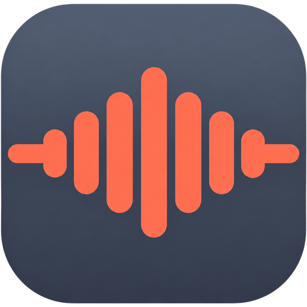
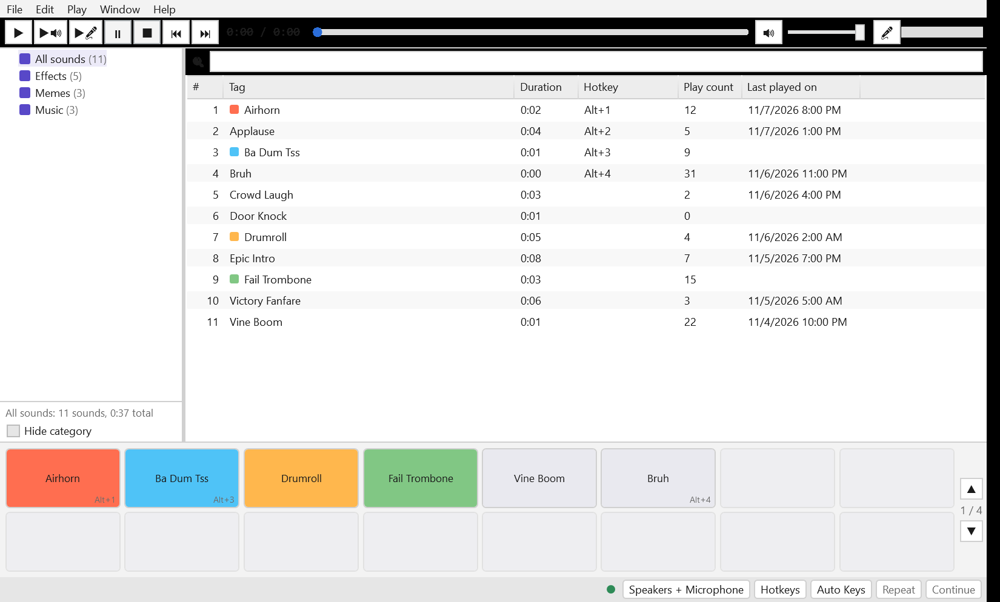
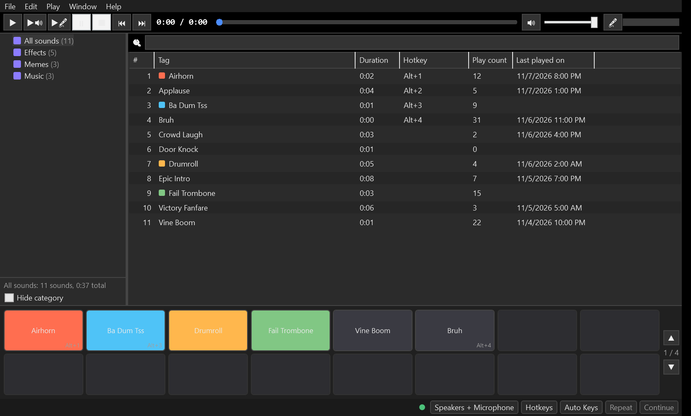

VoxPadA lightweight soundboard for Discord, games and streams. Global hotkeys, automatic push-to-talk, loudness matched to your voice, a recorder, an editor and text-to-speech. Everything Soundpad does, open source.
Download for WindowsLatest release · MSI installer (x64)Standalone app, nothing else to install. For the virtual microphone, add the free VB-CABLE.


Designed feature-for-feature after Soundpad, so nothing is missing when you switch.
Your voice and the sound are mixed into a virtual microphone. Pick it once in Discord, Teams or the game. Block voice replaces your voice entirely while a sound plays.
Any key or combo, mouse buttons too, even inside fullscreen games. Numpad and index hotkeys play sounds by number. Pass-through or swallow, your choice.
Automatic push-to-talk: VoxPad holds your PTT key for exactly the clip's duration, only when the game is in the foreground if you like.
EBU R128 normalisation per channel brings every clip to your measured voice level, so nobody gets blasted.
Nested categories, colour-coded tiles on a paged hotbar, instant search, drag-and-drop import of whole folders. MP3, OGG, Opus, FLAC, M4A, WAV, WMA.
Capture what you hear or your mic, trim and normalise in the waveform editor, or type a line and let text-to-speech say it.
A local API for Stream Deck and Touch Portal style plugins: play by index or name, stop, pause, play mode, list with colours.
Autosave every five minutes, daily backups, one-click restore, export to a folder you can move to another PC. Imports Soundpad lists.
Themes that follow Windows, a native style for high contrast and screen readers, tray mode, portable mode.
About five minutes, one reboot.
The free virtual cable from VB-Audio provides the virtual microphone. VoxPad will warn you if it is missing and restores your real speakers as the default device if the cable took over.
Status should read Good. Tick Use on your real microphone so your voice is mixed in, then click the mic icon to measure your voice level.
In Discord also turn off noise suppression, echo cancellation and automatic gain control for that input. Drop some sounds in, set a hotkey, done.